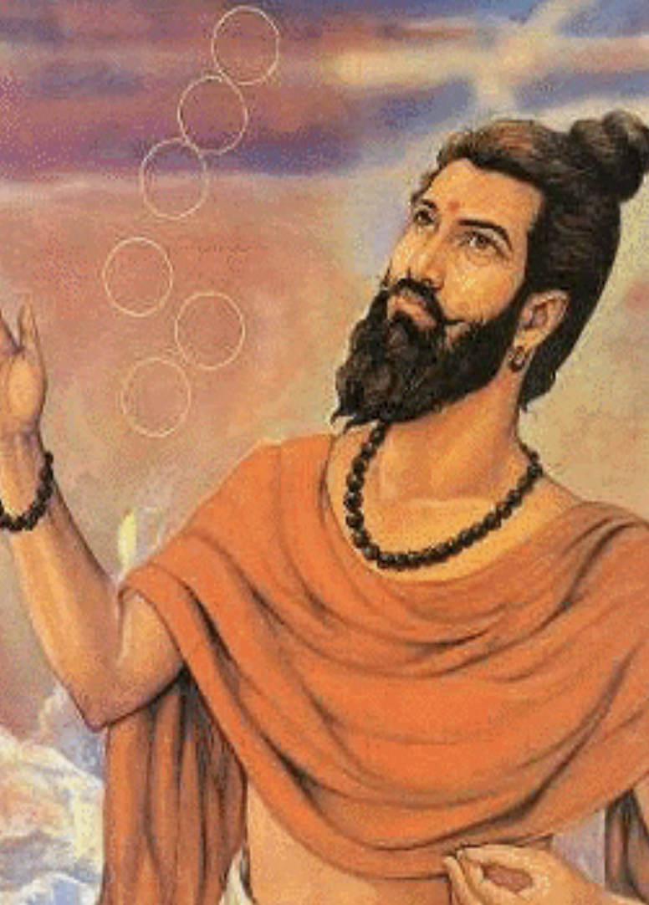

| Image | Content |
|---|---|
|  |
Kanad, sometimes known as Kashyap, was an ancient Indian philosopher and physicist who contributed significantly to atomic theory. He is credited for discovering anu (atoms) and popularising the concept of matter's atomic nature. Kanad's atomic theory, which predates comparable theories given by Greek thinkers like Democritus and Leucippus, proposes that all matter is made up of tiny, indivisible particles known as anu. He hypothesised that these anu would unite in various ways to generate larger particles and substances. Kanad's hypothesis also argued that atoms have natural attributes like taste, odour, and colour. Kanad's grasp of the concept of void (empty space) in connection to atoms was one of his most noteworthy contributions. He proposed that atoms are always in motion. |